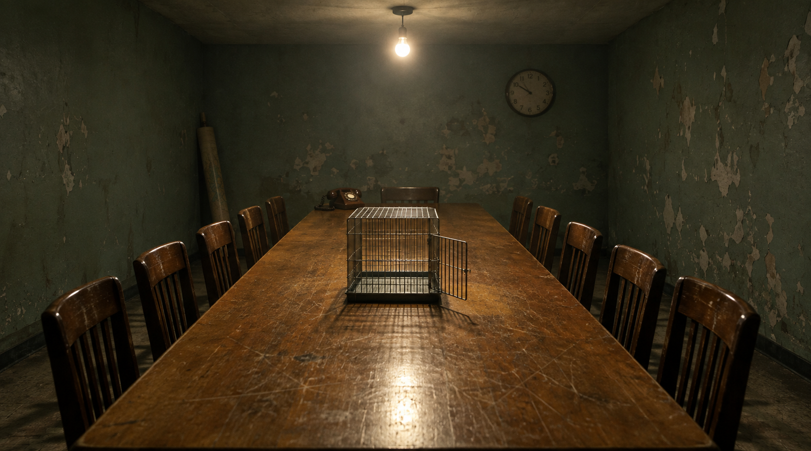

Guerra Biológica de Annie Jacobsen: El Libro Que Me Rompió
Me Como Las Novelas de Terror Como Croissants. Annie Jacobsen Acaba de Llevarse el Plato.
Déjenme aclarar de dónde vengo, porque importa.
Leo terror como un hombre grande come pastelería. Sin dignidad. Ñam ñam ñam ñam, la siguiente. Hice a King. Hice a Barker. Stephen Graham Jones, Dan Simmons, The Terror, toda la estantería miserable, los de tapas en relieve y los que tu tía esconde. Justo antes de este terminé The Grinding de Matt Dinniman y la pasé genuinamente bien, caótico incluido.
Estoy calibrado. Soy difícil de asustar. Ese es el único mérito que tengo, y lo voy a abandonar ahora mismo.
Porque hace dos años leí Guerra Nuclear: Un Escenario de Annie Jacobsen, y no me ha dejado desde entonces.
Ese libro son trescientas y pico páginas sobre más o menos la primera hora después de un lanzamiento. Eso es todo. Esa es toda la arquitectura. Agarra setenta y dos minutos de tiempo real y los pone bajo un microscopio hasta que se ven las patas moviéndose.
Y hace algo que casi nada logra. De vez en cuando, en medio de la noche, abro los ojos y estoy… pensando en Corea del Norte. No porque haya pasado algo. No porque haya leído las noticias. Porque ese libro instaló algo y corre en su propio horario.
Este año lo volvió a hacer, y lo hizo peor.
Guerra Biológica: Un Escenario. Dutton. Julio 2026. Cuatrocientas treinta y dos páginas.
Y voy a intentar explicar por qué este es peor que el nuclear, que suena como una estupidez y no lo es.
STOP.
Bien. Giro completo, y se los aviso porque lo estoy haciendo, ya que vamos a dejar mi mesita de noche y a entrar en una sala de reuniones en la Unión Soviética en 1989, y prefiero que vean el guiño.
Primero, sin embargo, un trámite, porque todo el mundo se equivoca en esto, incluyendo los que escriben reseñas.
Esto No Son Novelas
Voy a ser pedante exactamente un párrafo, porque es la razón entera por la que estos libros funcionan.
Guerra Nuclear y Guerra Biológica son no ficción. No thrillers. No ficción especulativa con notas al pie. Lo que escribe Jacobsen es un escenario, y ella misma define el término: “una secuencia ficticia de eventos construida usando entrevistas, investigación documental y procedimientos y tecnologías gubernamentales establecidos.”
Léanlo de nuevo despacio. Solo el disparador es inventado.
La respuesta es real. Los procedimientos son reales. Los plazos, la cadena de mando, la capacidad, las doce personas en la sala y lo que cada una está autorizada a hacer… todo documentado, todo con fuentes, todo entrevistado. Construye una máquina real, deja caer una piedrita ficticia adentro, y después simplemente filma lo que la máquina hace.
Una novela la podés dejar porque es una novela. Esta no, porque la única parte inventada es qué martes pasa.
Por Qué el Lento Es Peor
Esta es la aritmética, y es simple y horrible.
Guerra Nuclear es un libro sobre velocidad. Lo que lo hace insoportable es que no hay tiempo. Veintiséis minutos desde un lanzamiento hasta un impacto, sin ventana de decisión real, un hombre al que le entrega un menú en un avión. Es un horror de velocidad. Estás viendo un choque de autos a la velocidad de fotogramas que Dios tenía en mente, que es demasiado lenta para apartar la vista y demasiado rápida para hacer algo.
Y termina. Esa es la clemencia, y no notás que es una clemencia hasta que leés el otro. Una hora y pico y el libro terminó, porque el mundo también.
Guerra Biológica agarra esa aniquilación idéntica y la estira.
El escenario: un incidente en una instalación de investigación rusa. Un patógeno modificado con mayor transmisibilidad y letalidad se escapa y llega a Estados Unidos. Y entonces Jacobsen hace lo que hace, hora por hora, día a día, semana a semana, a través de autoridades de salud pública que no pueden identificar qué están viendo, organismos gubernamentales que no pueden atribuirlo, cuarentenas que no se pueden hacer cumplir, y vacunas que no existen todavía y no van a existir a tiempo.
El agente es una peste modificada genéticamente.
Peste. La de siempre. La que tiene un nombre tan pesado que tiene su propio adjetivo. Y la forma que importa para un arma es la neumónica — la versión que entró a los pulmones y ya no necesita una pulga, ni una rata, ni nada más que una persona parada cerca de otra persona que respira.
Y el libro no termina con un destello. Termina con un país despoblado y militarizado con sus instituciones civiles podridas. No un cráter. Una posguerra, con gente todavía adentro, en mal estado.
Esa es la diferencia y es toda la reseña: el libro nuclear trata de perderlo todo de golpe. El biológico trata de perderlo todo lo suficientemente despacio para verlo.
Y no tengo que argumentar eso, porque Jacobsen fue y consiguió a un hombre que realmente estuvo en el extremo receptor de uno de estos para que lo diga por mí.
Tom Daschle fue Líder de la Mayoría del Senado en octubre de 2001, y es uno de los dos senadores norteamericanos cuya oficina fue blanco de un ataque biológico. Ántrax. En un sobre. Dirigido a él personalmente.
Esto es lo que le dice:
“A diferencia de la guerra nuclear, el resultado de un ataque biológico mayor será ‘una muerte larga, dolorosa y lenta.’ Muerte física. Muerte gubernamental. Muerte en prácticamente todos los contextos. La guerra biológica… será profundamente pesadillesca. Personas haciendo cosas inhumanas, solo para sobrevivir.”
Lean el centro de eso de nuevo, porque es la parte que nadie espera y es la que más debería asustarlos.
No está hablando de cuerpos. Está hablando de la cosa que se supone que debe encargarse de los cuerpos. Un hombre que tuvo un patógeno militarizado enviado por correo a su propio escritorio les está diciendo que la institución también muere… y que muere despacio, en público, mientras la gente mira, y que la gente que mira va a empezar a hacerse cosas entre sí.
No es el floreo de un novelista. Es un ex líder de la mayoría describiendo lo que piensa que le pasaría al edificio que dirigió.
Antes tenía pesadillas con el mono de Outbreak. Dustin Hoffman, 1995, el capuchino, todo el asunto. Pensé que ese era mi piso. Sabía de la Muerte Negra. Sabía del asedio de Caffa en 1346, donde los sitiadores supuestamente catapultaron sus propios muertos de peste sobre las murallas de la ciudad, lo que siempre archivé bajo “la gente medieval estaba loca.”
Este libro tomó todo eso y lo reemplazó con algo mucho más silencioso y mucho peor.
La Sala Estaba en Absoluto Silencio

El extracto publicado no abre con un ataque. Abre con una reunión.
Unión Soviética, 1989. Un laboratorio. Científicos demostrando una prueba de concepto a una sala de colegas, usando conejos. El logro que se demuestra es que pueden construir un arma que produce “síntomas de dos enfermedades diferentes, una de las cuales no podía rastrearse.”
La frase de Jacobsen sobre la reacción en la sala:
“La sala estaba en absoluto silencio.”
Eso es todo. Esa es la prosa. Sin adjetivos haciendo trabajo pesado, sin música de fondo, sin decirte cómo sentirte. Solo la temperatura de una sala donde un grupo de profesionales ha entendido al mismo tiempo exactamente qué han hecho.
Hamish de Bretton-Gordon, reseñándolo en la Literary Review desde un contexto NBRQ, lo expresó mejor de lo que yo podría:
“Difícil de dejar, pero es incluso más difícil de dejar de pensar una vez terminado.”
Y sobre el oficio: “Jacobsen logra hacer accesibles temas científicos y de seguridad complejos sin sacrificar precisión ni ritmo.”
También nota la objeción obvia… “Algunos pueden criticar este enfoque como alarmista.” Lo cual es legítimo, y Christianity Today atacó el libro desde un ángulo completamente diferente, cuestionándolo por no ofrecer orientación práctica para la preparación. Ambas son críticas reales. Ninguna es la que yo haría. Diría que el riesgo real del libro es que es tan efectivo que produce parálisis en lugar de atención, y Jacobsen no resuelve del todo eso. Es diagnóstica, no médica.
Pero el asunto con “alarmista” es que hay que confrontarlo con lo que está documentado. Así que hagámoslo, porque es la parte que fui a leer después, a la una de la mañana, como un adulto razonable.
El Programa Que Sombrea Cada Página
No soy virólogo. No soy analista de seguridad. Soy un tipo con credencial de biblioteca y un caso grave de las tres de la mañana.
Pero esta parte es registro público, y es peor que el libro.
Biopreparat fue fundado en 1973 como un directorio farmacéutico nominalmente civil. Coordinaba con Defensa, Agricultura, Salud, la Academia de Ciencias y el KGB. En su apogeo operaba 52 instalaciones y empleaba a más de 50.000 personas.
Ahora sostengan ese número junto a este: la Unión Soviética firmó la Convención de Armas Biológicas en 1972.
Firmaron el tratado que lo prohibía, y al año siguiente construyeron el mayor programa de armas biológicas de la historia humana detrás de una fachada farmacéutica. Esto no es una teoría. Es historia admitida… Boris Yeltsin reconoció públicamente el programa ofensivo en los años 90, y su primer subdirector desertó y escribió un libro.
Ese hombre es Ken Alibek — nacido Kanatján Alibekov, microbiólogo kazajo, primer subdirector de Biopreparat desde 1988, emigró a los Estados Unidos en octubre de 1992. Construyó la primera bomba de tularemia de Rusia. Describió una preparación de ántrax, la Cepa 836, como “la cepa de ántrax más virulenta y viciosa conocida por el hombre.” En interrogatorios de la CIA describió la capacidad soviética de producir cientos de toneladas de virus de la viruela, entregables por bomba o misil balístico.
Once agentes fueron militarizados en todo el programa. Ántrax. Peste. Tularemia. Muermo. Brucelosis. Fiebre Q. Encefalitis equina venezolana. Toxina botulínica. Enterotoxina estafilocócica B. Viruela. Marburg.
Y luego estaban los proyectos, y los nombres de los proyectos son la parte que se te va a quedar, porque alguien se sentó en una oficina y los eligió:
“Ecología” — armas agrícolas. Fiebre aftosa. Peste porcina africana. Apuntado a la comida.
“Hoguera” — ingeniería de cepas para resistencia a antibióticos.
“Factor” — variantes de alta virulencia con presentaciones clínicas novedosas.
Lean ese último de nuevo y vuelvan a la reunión de 1989 en el extracto de Jacobsen. Síntomas de dos enfermedades diferentes, una de las cuales no podía rastrearse. No es una invención de novelista. Es un objetivo de programa, y tenía presupuesto y director y un martes a la mañana.
Tres Cosas Que Realmente Sucedieron
Y porque es fácil dejar que “programa” se quede abstracto, acá van tres días en que no lo fue.
Isla Vozrozhdeniya, 1971. Una prueba de viruela al aire libre. Unos 400 gramos de virus militarizado liberados. Una técnica en un buque de investigación cercano fue infectada y lo llevó a Aralsk, donde se propagó a varias personas incluyendo niños. Un general soviético recordó más tarde haber pedido que se prohibiera la parada del tren de Alma-Ata en Aralsk, para evitar que se extendiera por todo el país. Esa es la estrategia de contención. Cancelar la parada del tren.
Sverdlovsk, abril de 1979. Ántrax militarizado escapó de una instalación militar en una ciudad de más de un millón de personas. Al menos 105 personas murieron. El número exacto es desconocido y lo seguirá siendo, porque el KGB destruyó los registros hospitalarios. Por años la explicación oficial fue carne contaminada.
Y luego Nikolai Ustinov. Un investigador en el instituto Vector, trabajando en Marburg. Se infectó en un accidente y murió. Y entonces sus colegas aislaron el virus de sus propios órganos y encontraron que la cepa que lo había matado era más potente que la con la que había estado trabajando.
La llamaron Variante U.
Por Ustinov.
El Ministerio de Defensa soviético la aprobó para su militarización en 1990.
Un hombre murió, y la cosa que lo mató resultó ser una mejora, y nombraron la mejora en su honor, y la pusieron en producción. No hay ningún novelista vivo que se atreviera a escribir eso. Lo cortarían en la primera edición por ser demasiado.
Entonces, ¿Deberías Leerlo?
Sí. Con condiciones.
Leé Guerra Nuclear primero. No por cronología, por calibración. Necesitás la versión rápida para entender por qué la lenta es peor, y la comparación está haciendo la mitad del trabajo.
No lo leas de noche. Yo lo hice. Reporto desde el campo. No lo hagas.
Y sabé en qué estás metiendo. Este no es un libro que te da un plan. La queja de Christianity Today es legítima en sus propios términos… lo cerrás sin lista, sin kit, sin próxima acción. Lo que obtenés en cambio es la cosa que Jacobsen realmente ofrece, que es la eliminación de tu capacidad de no saber.
Ese es el trato. No vende preparación. Vende el fin de la ignorancia cómoda, y el precio es que te despertás a las tres de la mañana dos años después, pensando en un país al que nunca fuiste.
De Bretton-Gordon hace un punto más en esa reseña que no he podido sacudir, y no es sobre el libro para nada. La Convención de Armas Biológicas permite investigación “defensiva.” Las armas biológicas siguen siendo, en su frase, “las menos reguladas de todas las armas de destrucción masiva.” Y en los cinco años después del 11/9, solo Estados Unidos construyó más de mil laboratorios de alta contención.
Todos defensivos. Obviamente. El de todos lo es.
Biopreparat también era una empresa farmacéutica.
Preguntas Rápidas Desde Las Butacas Baratas
¿De qué trata Guerra Biológica: Un Escenario de Annie Jacobsen?
Es un libro de no ficción de 2026 de Dutton que construye un escenario detallado en el que un patógeno modificado escapa de una instalación de investigación rusa y se propaga por Estados Unidos. Sigue la respuesta gubernamental y de salud pública hora por hora, luego día a día y semana a semana, terminando con un país despoblado y militarizado. Los críticos describen el agente como una peste modificada genéticamente.
¿Guerra Biológica es ficción o no ficción?
No ficción. Jacobsen usa lo que ella llama un escenario: “una secuencia ficticia de eventos construida usando entrevistas, investigación documental y procedimientos y tecnologías gubernamentales establecidos.” Solo el evento desencadenante es inventado; las capacidades, procedimientos y respuestas institucionales son investigados y documentados. Más sobre el libro acá.
¿Es Guerra Biológica más aterradora que Guerra Nuclear: Un Escenario?
Diferente, y posiblemente peor. Guerra Nuclear cubre la primera hora después de un lanzamiento y saca su horror de la velocidad y la ausencia de tiempo para decidir. Guerra Biológica extiende la misma catástrofe durante semanas, con fallos de atribución, colapso de la cuarentena y sin vacuna a tiempo. Leé la entrevista de Jacobsen en PBS para su propia comparación.
¿Qué fue Biopreparat?
El programa de armas biológicas de la Unión Soviética, fundado en 1973 bajo una fachada farmacéutica civil, operando 52 instalaciones con más de 50.000 empleados. Militarizó once agentes incluyendo ántrax, peste, viruela y Marburg, y operó después de que la URSS firmara la Convención de Armas Biológicas de 1972. Boris Yeltsin reconoció públicamente el programa en los años 90. El ex primer subdirector Ken Alibek desertó y escribió sobre ello.
¿Qué pasó en Sverdlovsk en 1979?
Ántrax militarizado fue liberado accidentalmente desde una instalación militar soviética en Sverdlovsk, matando al menos a 105 personas. El número real sigue siendo desconocido porque el KGB destruyó los registros hospitalarios, y la explicación oficial por años fue carne contaminada.
¿Qué es la Variante U de Marburg?
Una cepa del virus Marburg aislada de los órganos del Dr. Nikolai Ustinov, un investigador soviético que murió tras infectarse durante investigación armamentística. La cepa recuperada de él resultó más potente que la con la que estaba trabajando, fue nombrada “Variante U” en su honor, y fue aprobada para militarización por el Ministerio de Defensa soviético en 1990.
¿Qué fueron los proyectos soviéticos Hoguera, Ecología y Factor?
Tres programas dentro del esfuerzo soviético de armas biológicas. Ecología desarrolló armas agrícolas como la fiebre aftosa y la peste porcina africana. Hoguera modificó cepas para resistencia a antibióticos. Factor buscaba variantes de alta virulencia con presentaciones clínicas novedosas — síntomas de dos enfermedades diferentes, una de las cuales no podía rastrearse.
Rant terminado. Sin arrepentimientos, y sin dormir muy bien.
Sigo comiéndome el terror como croissants. Solo que ahora reviso el plato.
Leé Guerra Nuclear primero.